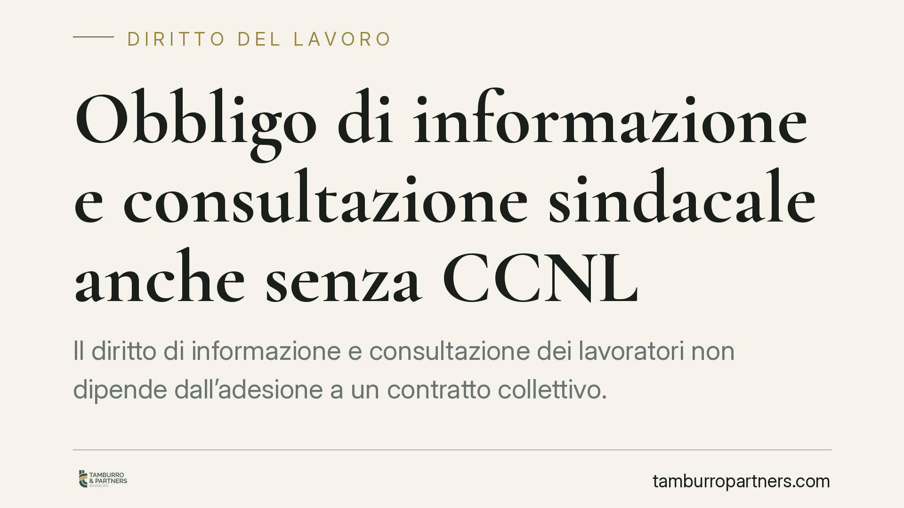

Obbligo di informazione e consultazione sindacale anche senza CCNL
Il diritto di informazione e consultazione dei lavoratori non dipende dall'adesione a un contratto collettivo. La disciplina attuativa della direttiva europea si applica alle imprese sopra una determinata soglia dimensionale, a prescindere dal CCNL. Il rifiuto sistematico del confronto sindacale può integrare condotta antisindacale, con esposizione alla procedura d'urgenza dell'art. 28 dello Statuto dei lavoratori.

Il quadro: cosa è emerso
Un orientamento giurisprudenziale che merita attenzione riguarda le imprese prive di contratto collettivo applicato. L'assunto secondo cui, in assenza di CCNL, non sussisterebbero obblighi di confronto con le rappresentanze sindacali è tecnicamente fragile.
La ragione è semplice: gli obblighi di informazione e consultazione non nascono dal contratto collettivo, ma da una fonte di legge. Il datore che li ignora, confidando nella mancata adesione a un CCNL, si espone al rischio di veder qualificato il proprio comportamento come antisindacale.
> Nota: il presente contributo commenta l'orientamento in materia. Gli estremi della singola pronuncia richiamata dalla stampa specializzata sono in corso di verifica; l'analisi resta valida a prescindere dal precedente specifico, poiché fondata sul dato normativo.
Inquadramento normativo
La fonte dell'obbligo è il D.lgs. n. 25/2007, che ha dato attuazione nell'ordinamento interno alla Direttiva 2002/14/CE. È bene precisare il punto sul piano tecnico: l'obbligo grava sulle imprese in forza del decreto di recepimento, non della direttiva in sé. Le direttive non self-executing producono effetto diretto solo nei rapporti verticali (verso lo Stato) e non tra privati; la fonte interna operativa è dunque il decreto legislativo.
Quanto all'ambito di applicazione, l'art. 3 del D.lgs. 25/2007 individua la soglia dimensionale nelle imprese che occupano almeno 50 dipendenti. Al di sopra di tale soglia il datore è tenuto ai diritti di informazione e consultazione, indipendentemente dall'applicazione o meno di un contratto collettivo nazionale.
L'art. 4 definisce oggetto e modalità del confronto: informazione sull'andamento dell'attività e sulla situazione economica dell'impresa; consultazione sulle decisioni suscettibili di incidere sull'organizzazione del lavoro e sui contratti di lavoro.
Consultare non significa concordare
È una distinzione decisiva, spesso fraintesa. L'obbligo di consultazione impone al datore di avviare un confronto effettivo con le rappresentanze, fornendo informazioni tempestive e adeguate e prendendo in esame le osservazioni sindacali. Non impone, però, di concordare l'esito: il datore conserva il potere decisionale finale.
In altri termini, la legge esige un confronto reale, non una mera formalità e nemmeno un veto sindacale. Ciò che è vietato è il rifiuto pregiudiziale del dialogo o la sua riduzione a un adempimento simulato.
Il rischio: l'art. 28 dello Statuto
Il rifiuto sistematico del confronto può essere qualificato come condotta antisindacale ai sensi dell'art. 28 della legge n. 300/1970 (Statuto dei lavoratori). Si tratta di una procedura d'urgenza: le organizzazioni sindacali possono rivolgersi al giudice del lavoro, che con decreto motivato può ordinare la cessazione del comportamento e la rimozione dei suoi effetti.
La procedura è rapida e il decreto è immediatamente esecutivo. Per l'impresa il rischio non è solo economico, ma anche reputazionale e organizzativo, poiché l'ordine giudiziale può imporre di riaprire un confronto già chiuso.
Implicazioni pratiche per le imprese
È opportuno che le imprese prive di contratto collettivo non interpretino tale assenza come una franchigia rispetto agli obblighi partecipativi. Superata la soglia dei 50 dipendenti, il perimetro degli obblighi va valutato con attenzione, soprattutto prima di decisioni che incidono su organizzazione del lavoro, riorganizzazioni, trasferimenti d'azienda o modifiche contrattuali collettive.
La gestione documentale del confronto assume rilievo probatorio: in un eventuale giudizio ex art. 28, la tracciabilità delle comunicazioni e degli incontri è il primo elemento su cui si misura l'effettività della consultazione.
Cosa fare in concreto
- Verificare la soglia: accertare se l'impresa occupa almeno 50 dipendenti, ai sensi dell'art. 3 D.lgs. 25/2007, calcolando l'organico secondo i criteri di legge.
- Mappare le decisioni rilevanti: individuare in anticipo le scelte gestionali che attivano l'obbligo di consultazione (riorganizzazioni, mobilità, modifiche dell'orario e dell'assetto occupazionale).
- Formalizzare le procedure: predisporre un protocollo interno che stabilisca tempi, contenuti e modalità dell'informazione e della consultazione sindacale.
- Documentare il confronto: conservare convocazioni, verbali e comunicazioni per dimostrare l'effettività del dialogo.
- Non confondere consultazione e accordo: avviare il confronto reale prima della decisione, senza attendere la contestazione sindacale.
Disclaimer
Contributo informativo a cura di Tamburro & Partners Avvocati - Avv. Giuseppe Tamburro. Non costituisce parere legale.
Ogni storia di lavoro ha i suoi tempi.
Se gestisci HR e vuoi un confronto su contenzioso, ispezioni o licenziamenti, scrivi allo studio. Ti rispondiamo entro un giorno lavorativo.